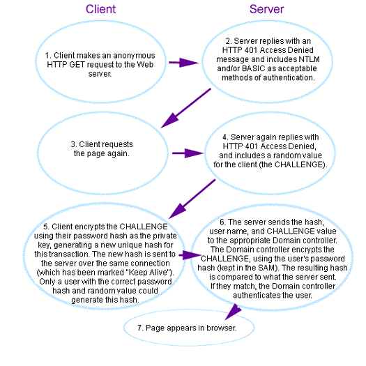

|
| ||
|
| ||
Scott Stabbert
ASP/Visual InterDev Training Lead
Microsoft Internet Developer Support
Microsoft Corporation
October 10, 1997
Contents
Introduction
ACLs, NTLM, and Other Definitions
Impersonation
Controlling the Authentication Method, and Why We Care
ASP Code-Based Security
Windows NT Challenge/Response
And Now for Something Completely Different: The Hash
IIS and the Challenge/Response Authentication Process
Why a Random Challenge?
Delegation!
Basic Authentication
Common Authentication Scenarios
UNC Paths
Delegation, NOT!
To "Security Dialog" or not to "Security Dialog"? That Is the Question!
Hackers and Your Site
Final Word
If you are a Web developer working with Microsoft® Internet Information Server (IIS) version 3.0, it is very important to understand how IIS uses authentication and impersonation to control security on your Web server. While working in the Internet Developer Support team at Microsoft, I found that about 1 in 4 of the issues we dealt with were caused by the umbrella topic we call permissions. Further, most of those issues could have been avoided if the developer simply had a better conceptual understanding of what was happening under the hood. Authentication is simply the process of determining the identity of a user. Once a user has been positively identified, Windows NT® can then control what resources that user can access. While not extremely technical, authentication and security can be confusing. A solid understanding of how IIS controls security will enable you to create more robust sites and avoid common, time-consuming problems.
This article explains Windows NT security as it relates to IIS, so you can effectively troubleshoot security-related problems. We will cover the three forms of authentication, how they differ, several ways of controlling access to key areas on your Web server, and the important but almost universally misunderstood concept of "delegation." Understanding delegation is mandatory for anyone building a data-driven Web site using IIS. Understanding how Windows NT handles different users will potentially save you days, or even weeks, of troubleshooting.
To start, let's define some common terms:
In different situations, IIS will pretend to be different users. Remember that all processes operating on a Windows NT machine are run under a valid Windows NT account. When a program or process (like IIS) is run on behalf of a user, it is said to be running under the security context of that user. The purpose of a security context is to give the process running on behalf of users no more access to files and resources than users would have if they were running a process locally. When IIS runs of behalf of a user, it is said to be impersonating that user.
IIS is designed to handle Web requests as an automated service. To do this, IIS needs to run under a valid user's security context. There are two kinds of requests that IIS may be required to respond to: anonymous requests and authenticated requests. In anonymous requests, IIS knows almost nothing about the user; in authenticated requests, IIS knows exactly who is requesting the resource. It's not always obvious which method is being used, bacause both anonymous and authenticated requests can happen without dialog boxes or other indications to the user. It is mandatory, however, that we as developers always know which is being used. Which account IIS impersonates, and, by extension, what IIS can and cannot do, depends solely on knowing which type of request if being made.
Anonymous Requests -- No information is required from the user. By default, when a browser requests a Web page, IIS will first try to fill the request without authenticating the user. To do this, IIS impersonates a special Windows NT account, IUSR_machinename (where IUSR_machinename is the name of the IIS host computer). This account is created during the installation process for IIS. If IIS, impersonating the IUSR_machinename account, can access the requested resource, then the page is served to the anonymous user.
A common problem with anonymous access occurs when the password for the IUSR_machinename account and the password entered in the Internet Service Manager get out of sync. When IIS tries to impersonate the IUSR_machinename account, it submits the password that was entered in the anonymous logon field to a Windows NT server. If that password is incorrect, IIS is prevented from using the IUSR_machinename account. Once anonymous access fails, IIS will attempt to authenticate everyone. Because authentication can happen silently, the site can fail, but the reason isn't always apparent. I've talked to many Web site administrators who were experiencing bizarre security-related problems because their site was authenticating every user, and they didn't even know it. The type of authentication you are using makes a huge difference if your pages are accessing other resources like databases or server-side components (such as DLLs).
Authenticated Requests -- Positive identification of the user is required. When IIS cannot fill the request using the IUSR_machinename account, IIS will attempt to authenticate and then impersonate the user so that it can determine if that user should have access to the requested resource. There are two methods that IIS can use to authenticate users: Challenge/Response and Basic. These are discussed later in this article. Authenticated Web access usually works best within a company's intranet or a well-defined, contained group. Even so, there are some limitations to consider.
The IIS Service Manager tool is the primary place to configure IIS for WWW, FTP, and Gopher services. Without going into great detail about the options in the WWW Properties dialog box, we do need to be aware of several key items. By default, the Password Authentication group will have Allow Anonymous and Challenge/Response selected. The third access method is Basic, which we will cover later. Let's look at several ways of controlling access to your Web server.
1. Allow Anonymous check box
If Allow Anonymous is checked, IIS will always attempt to access the requested resource by impersonating the Anonymous Logon account (by default, IUSR_machinename). When the IUSR_machinename account was automatically created, it was assigned a random password, added to the Guests group, and given guest privileges. Adding or removing the Allow Anonymous check is the best way to turn on or off anonymous access for the entire Web server. With Allow Anonymous deselected, only users with valid, verifiable (using either of Basic or Challenge/Response authentication) Windows NT accounts will be serviced. Setting up IIS this way is usually appropriate only for a corporate or members-only setting, where it is important to validate all users accessing your site.
2. Change permissions on files and folders.
NTFS-level permissions are respected by IIS, so manipulating individual permissions on files and folders enables more granular control over which pages can be accessed by whom. A common technique for controlling access follows. Pages viewable by anyone are put in one folder, while pages restricted to site administrators are put in another. Right-click the restricted folder and select Properties/Securities/Permissions. Because the goal is to ensure that IIS can't use the IUSR_machinename account to access the restricted files anonymously, remove the Everyone group and IUSR_machinename from the access list. Placing the files into two separate folders makes maintaining the permissions on the two groups much easier than working on a file-by-file basis.
Using ASP code, you can implement more specialized security options (which are much more fun than the options just described). For example, say some annoying users plague your site. Because their IP addresses can be pulled from the server activity logs, you could use the following code to deny access:
<%If request.servervariables("REMOTE_ADDR") = "200.200.157.4" then
Response.Buffer = TRUE
Response.Status = ("401 Unauthorized")
Response.End
End If%>
There are many variables available within an Active Server Page that supply information about the browser making the request, as well as the information about IIS itself. The LOGON_USER command, for example, will return the Domain\Username of authenticated users, and a blank for anonymous users. You could then use server-side code to check for specific individuals, and redirect them to other pages. I've even seen companies use this technique to lock competitors out of their Web sites.
Windows NT Challenge/Response is a very secure way to determine who is making a request. The process flow of Challenge/Response is mandatory knowledge for anyone working on IIS. (We are really getting around to the Windows NT process of delegation, but delegation is best explained after Challenge/Response.)
Windows NT Challenge/Response does not send a password across the network, because passwords can be intercepted and deciphered. Windows NT uses a non-reversible algorithm analogous to a meat grinder. You put something in, and out comes a hash. Windows NT uses the Internet standard MD4 hashing algorithm to produce a 16-byte (128-bit) hash. It is impossible (theoretically) to take both the hash and the algorithm and mathematically reverse the process to determine the password. In other words, the password serves as a "private key." Only someone who has the key can generate a particular hash. A Windows NT domain controller has a database of user hashes generated from user passwords, but doesn't store the passwords themselves. (Note that this separation of hash and passwords does NOT make the domain controller less of a target for hackers, because sometimes a hash can be used as a password-equivalent.)
IIS will try to use Challenge/Response authentication if the following are true:
When we say that IIS tries to authenticate the user, what it does is rather simple. It sends an HTTP 401 Access Denied message back to the browser, with a list of authentication methods it accepts. Much like a bouncer at an exclusive club, IIS is saying, "You can't get what you want without identifying yourself. By the way, I accept the following methods of identification." The two methods of accepted identification are Challenge/Response and Basic. Which method is acceptable depends on which WWW properties are checked in the IIS Internet Service Manager dialog box. If both authentication methods are turned on, Internet Explorer will always attempt to use Challenge/Response, and other browsers will use Basic.
Figure 1 presents a packet's-eye view of how Windows Challenge/Response authenticates a user without ever seeing their password.

Figure 1. The Windows NT Challenge/Response Process
The extra step of encrypting a challenge using a password hash, instead of just passing the simple hash up to the domain, makes it harder for the hash to be intercepted and used as a password. Because the challenge requires the user's password hash to generate the new hash, it proves the person has at least the user's hash (and probably the user's password as well). All this without having the password sent over the wire. In essence, the password becomes a private key and the random value a constantly changing public key.
Delegation is where most people lose it with Windows NT security and IIS authentication, even though delegation is critical to anyone considering a secure Web server environment, or simply wants things to work! When the IIS Web server impersonates a user authenticated using Challenge/Response, the IIS server does NOT have the user's password or password hash. IIS only sees the encrypted challenge, which it passes to the domain controller. You will most likely encounter this when you have an ASP page that accesses resources on another Windows NT box (such as a remote database server). The remote server will challenge IIS to prove that it is the impersonated user, and IIS will not be able to, because it cannot encrypt any challenges sent to it with the user's hash. The remote server will deny access, and your database-enabled Web page will fail. This is a limitation in the Windows NT 4.0 (and prior) security model, not IIS. Using Windows NT Challenge/Response, there is no way a process relying on impersonation can access so much as a text file on another Windows NT box.
If you ever want to determine when delegation is an issue, ask yourself if the Web server has the user's password or hash. In politics, you "follow the money". In delegation, you "follow the password"!
An analogy for this is an executive that delegates responsibility to a secretary to sign checks, and otherwise act on their behalf. When using Challenge/Response, the user cannot delegate IIS to act fully on their behalf. This particular limitation may well go away with the release of Windows 2000, when Windows NT incorporates the Kerberos authentication system (developed for MIT's Project Athena).
Most people are afraid to use the Basic authentication option because of the screen they are confronted with when activating it:
The authentication option you have selected results in passwords being transmitted over the network without data encryption. Someone attempting to compromise your system security could use a protocol analyzer to examine user passwords during the authentication process. For more detail on user authentication, consult the online help. Are you sure you want to continue?The message is pretty much as bad as it sounds. The user name and password are Base-64 encoded. Base 64 is easily decoded by even novice hackers, although they still need to access your network and use a TCP/IP packet-sniffer to intercept network packets. As a result, hackers are not likely to go after your site unless you are an overly attractive target (such as a bank).
Most Web administrators I've talked to know that there are differences between Challenge/Response and Basic authentication, but still treat them as interchangeable. Basic authentication always prompts users with a dialog box asking them to enter a user name and password. This information is then sent to IIS, which uses the name and password to execute a Log on locally command to the IIS box. Because IIS now has the password of that user, it can answer challenges from remote machines, eliminating the delegation problem. (Think of a user authenticated using Basic as actually sitting at the Web server, while a user authenticated using Challenge/Response is still accessing the Web server from a network. In fact, the user rights Access this computer from the network and Log on locally are specific rights that need to be set, and depend on which authentication method is used. To set these rights, use the User Manager for Domains tool and select the User rights from the Policies menu.
Even with its flaws, there are two circumstances where Basic authentication should be used.
Whenever an Internet user is authenticated using Windows NT Challenge/Response, delegation will be an issue when IIS accesses Windows NT resources across a network or local resources using UNC (Universal Naming Convention, but you already knew that) paths. Of course, all local resources can be accessed as long as the user has the correct NTFS-level permissions.
A common delegation-related error occurs when an .ASP page is coded to access a database using a file-based data source (such as an Access .MDB file) and the location is specified using a UNC path (such as ). Even though the resource is local, specifying a location using UNC makes it look to Windows NT as if it is elsewhere on the network. The Windows NT networking subsystem handles UNC paths. Windows NT is abstracted within its various components enough that if you step into the networking subsystem, as far as the other Windows components are concerned, you are out on the network. This leads to the confusing, but also rather amusing, scenario where an IIS machine, authenticated using Challenge/Response, is trying to access a local resource using UNC. In effect, it is demanding authentication from itself, and is unable to fulfill the request. To resolve this problem, use absolute paths on the IIS machine (for example, C:\folder\resource.ext).
There is another, more subtle security-related failure that mimics delegation failure, but is not related to delegation at all. It occurs on a three-machine hop that fails (browser to Windows NT/IIS server to Windows NT remote resource). To determine if the error is delegation-related, check to see if the transaction is authenticated. If it is, the problem is almost certainly delegation-related. If the page is accessed anonymously, however, the problem is probably caused by the anonymous logon account being local to the IIS machine. This can easily happen, because the IUSR_machinename account is created locally. IIS impersonates IUSR_machinename, and attempts to access a resource on the remote machine. The challenge is passed, and IIS correctly encrypts the challenge using the IUSR_machinename password hash. However, the remote Windows NT machine tries to validate the password has using its local SAM database and the local domain controller. Neither the remote Windows NT machine nor the domain controller have ever heard of this account, and therefore can't validate the information.
To avoid this problem, try one of the following:
Some Web developers do not want their users to have to type in a name and password each time they hit the site. So when will a user be prompted with a dialog box to enter their name and password?
When using Windows NT Challenge/Response, Internet Explorer will automatically and invisibly send the logon name, domain name, and hash of the current user to the Web server. Internet Explorer does this without asking, because sending the encrypted challenge doesn't present any real security risk. From there, two things can happen:
Under Basic authentication, the user will always be prompted with a logon dialog. You can probably guess why. You are about to do something that could compromise your Windows NT account name and password. All browsers figure that if you are willing to fill in the information and press OK, then you must know what you are doing. I personally don't have a problem using Basic authentication on a secure corporate network, but I will not use it over the Internet without an additional layer of security such as Secure Sockets Layer (SSL is invoked on a specially-configured Web server that uses HTTPS:// instead of HTTP://). Once again, the user will need to explicitly state the domain. IIS still needs to verify the submitted information with some domain controller.
Before I go any further, I need to offer a disclaimer: Yes, an aspiring young hacker could read this article and get ideas, but, believe me, there are much better sources for hackers than this article. The best way to really secure your site is to know where its weak points are (no one knows a site's weak points better than hackers do). There are several areas a hacker may try and attack or exploit on a Web site. Obviously, getting their hands on a username and password with administrative privileges is the biggest coup. Getting a user's password hash is almost as good, because a password hash can sometimes be used as a 'password equivalent'. The password hash could be used to answer challenges by encrypting the challenge. Doing this can grant an intruder Access this computer from the network rights. To be granted Log on locally rights, they still need the actual password.
Several programs have been written specifically to extract and crack password hashes from a Windows NT domain controller's SAM database. PWDump.exe and NTCrack.exe are both free on the Internet, and are used by both system administrators and hackers. PWDump.exe is a program written to dump the SAM database of user hashes and account information to a text file. System administrators use PWDump to synchronize password lists between network servers in a mixed environment (such as UNIX and Windows NT), eliminating the need for different passwords across different operating systems. Hackers use PWDump and NTCrack to execute a brute-force attack against a network. Hackers usually wouldn't run PWDump themselves, because you need administrator-level privileges to run it (and if a hacker already had an administrator's password, they wouldn't need to run PWDump. A hacker without administrative access to a network could construct a Trojan horse program and send it in e-mail to an unsuspecting user. If the user, while logged on with administrative rights, ran the attachment in e-mail, the program could silently dump the SAM database and e-mail the text file to the hacker. (I recently received mail with an attachment that said "click here"; I'll give you exactly one guess what the chances were that I clicked there).
Once a hacker has the output of PWDump, they still don't have any passwords. They use NTCrack to execute a brute-force attack against the list of password hashes. NTCrack can take all the words in the English language, play sophisticated games for variations with numbers and case sensitivity, and, in several hours on an average Pentium machine, generate all the possible hashes for about a million words and phrases. It then just matches the hashes on file with the hashes retrieved from PWDump, and looks to see which password generated that hash. Remember that even though the MD4 hashing algorithm theoretically can not be reversed, NTCrack relies on the fact that users tend to choose passwords that are easy for them to remember. If NTCrack had to brute-force attack all the possible password hashes for the maximum password length on Windows NT machines of 14 characters (including numbers, symbols, and case sensitivity), the search would take several thousand million years using a Pentium 120. (I don't know if anyone has calculated how long it would take on a Pentium Pro, but I think we're safe for a little while.) If you would like more information on security issues, search the Internet for NTCrack or PWDump. I personally enjoy using NTCrack on my own system, to ensure that the password list is secure and that my users are choosing good passwords.
I hope you now have a better idea of Windows NT security issues that affect Web site development. This subject comes up most frequently for sites that use authentication and deliver dynamic, database-driven content. This article discussed the underlying foundations of security and delegation. Future articles will build on this understanding and present more specific configuration issues and problems. If you have a good understanding of what IIS is doing to get its job done, you'll be much more able to get your job done.
Happy programming.
Did you find this material useful? Gripes? Compliments? Suggestions for other articles? Write us!
© 1999 Microsoft Corporation. All rights reserved. Terms of use.